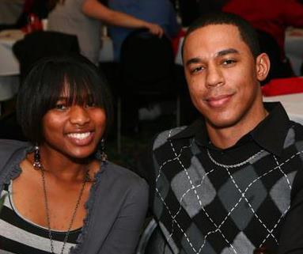
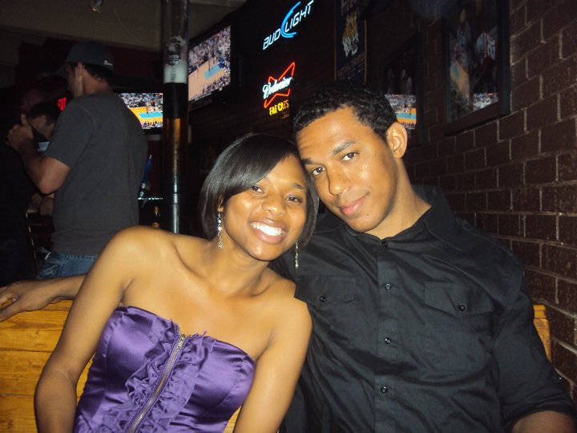
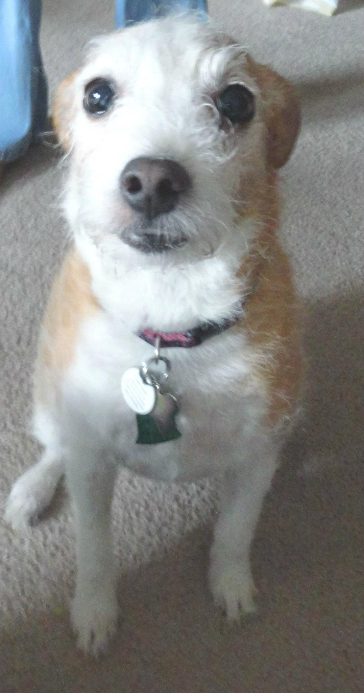
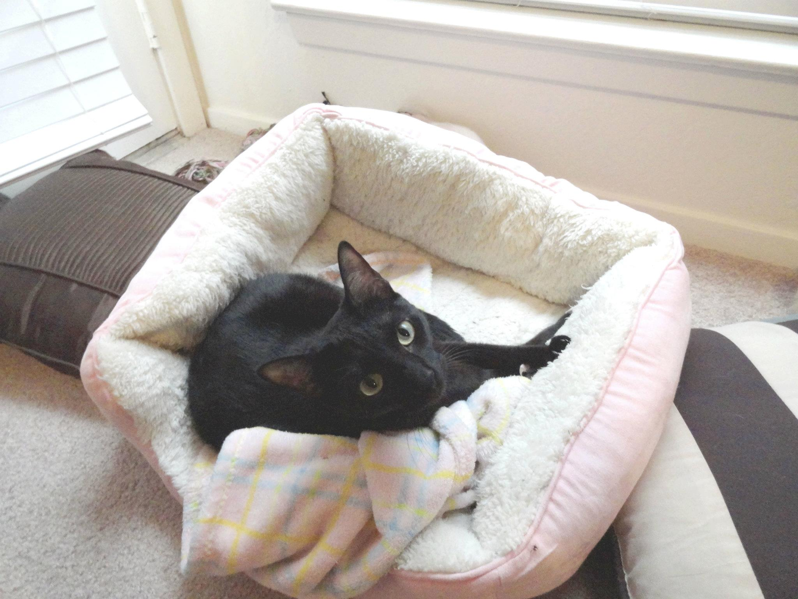

- We met for the first time on December 12, 2009.
This picture was taken at a Squadron Christmas party.
- Keshia and Abdur officially became a couple on January 7th, 2010.
- Then Keshia brought her dog Sprinkles...
- So Abdur rebounded that with a cat, Pixie.